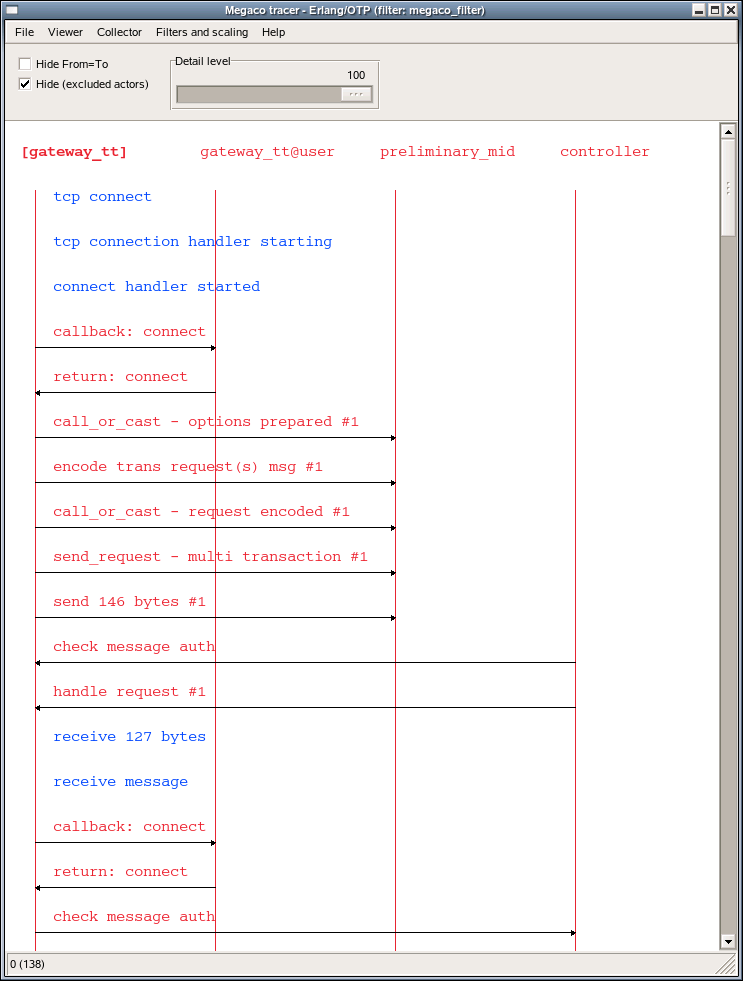
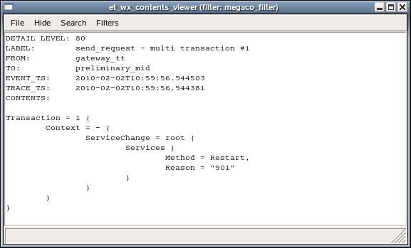

Advanced examples
View SourceA simulated Mnesia transaction
The Erlang code for running the simulated Mnesia transaction example in the
previous chapter is included in the et/examples/et_demo.erl file:
sim_trans() ->
sim_trans([]).
sim_trans(ExtraOptions) ->
Options = [{dict_insert, {filter, mgr_actors}, fun mgr_actors/1}],
{ok, Viewer} = et_viewer:start_link(Options ++ ExtraOptions),
Collector = et_viewer:get_collector_pid(Viewer),
et_collector:report_event(Collector, 60, my_shell, mnesia_tm, start_outer,
"Start outer transaction"),
et_collector:report_event(Collector, 40, mnesia_tm, my_shell, new_tid,
"New transaction id is 4711"),
et_collector:report_event(Collector, 20, my_shell, mnesia_locker, try_write_lock,
"Acquire write lock for {my_tab, key}"),
et_collector:report_event(Collector, 10, mnesia_locker, my_shell, granted,
"You got the write lock for {my_tab, key}"),
et_collector:report_event(Collector, 60, my_shell, do_commit,
"Perform transaction commit"),
et_collector:report_event(Collector, 40, my_shell, mnesia_locker, release_tid,
"Release all locks for transaction 4711"),
et_collector:report_event(Collector, 60, my_shell, mnesia_tm, delete_transaction,
"End of outer transaction"),
et_collector:report_event(Collector, 20, my_shell, end_outer,
"Transaction returned {atomic, ok}"),
{collector, Collector}.
mgr_actors(E) when is_record(E, event) ->
Actor = fun(A) ->
case A of
mnesia_tm -> trans_mgr;
mnesia_locker -> lock_mgr;
_ -> A
end
end,
{true, E#event{from = Actor(E#event.from),
to = Actor(E#event.to),
contents = [{orig_from, E#event.from},
{orig_to, E#event.to},
{orig_contents, E#event.contents}]}}.If you invoke the et_demo:sim_trans() function, a Viewer window will pop up
and the sequence trace will be almost the same as if the following Mnesia
transaction would have been run:
mnesia:transaction(fun() -> mnesia:write({my_tab, key, val}) end).And the viewer window will look like:
Erlang R13B03 (erts-5.7.4) [64-bit] [smp:4:4] [rq:4] [async-threads:0] [kernel-poll:false]
Eshell V5.7.4 (abort with ^G)
1> {ok, Viewer} = et_viewer:start([]).
{ok,<0.40.0>;}
2> et_demo:sim_trans().
{ok,{table_handle,<0.45.0>,24596,trace_ts,
#Fun<et_collector.0.62831470>}}
Some convenient functions used in the Mnesia transaction example
The module_as_actor filter converts the Event Records so the module names
becomes actors and the invoked functions becomes labels. If the information
about who the caller was it will be displayed as an arrow directed from the
caller to the callee. The [{message, {caller}}, {return_trace}] options to
dbg:tpl/2 function will imply the necessary information in the Erlang traces.
Here follows the module_as_actor filter:
module_as_actor(E) when is_record(E, event) ->
case lists:keysearch(mfa, 1, E#event.contents) of
{value, {mfa, {M, F, _A}}} ->
case lists:keysearch(pam_result, 1, E#event.contents) of
{value, {pam_result, {M2, _F2, _A2}}} ->
{true, E#event{label = F, from = M2, to = M}};
_ ->
{true, E#event{label = F, from = M, to = M}}
end;
_ ->
false
end.The plain_process_info filter does not alter the Event Records. It merely
ensures that the event not related to processes are skipped:
plain_process_info(E) when is_record(E, event) ->
case E#event.label of
send -> true;
send_to_non_existing_process -> true;
'receive' -> true;
spawn -> true;
exit -> true;
link -> true;
unlink -> true;
getting_linked -> true;
{seq_send, _Label} -> true;
{seq_receive, _Label} -> true;
{seq_print, _Label} -> true;
{drop, _N} -> true;
_ -> false
end.The plain_process_info_nolink filter does not alter the Event Records. It do
makes use of the plain_process_info , but do also ensure that the process info
related to linking and unlinking is skipped:
plain_process_info_nolink(E) when is_record(E, event) ->
(E#event.label /= link) and
(E#event.label /= unlink) and
(E#event.label /= getting_linked) and
plain_process_info(E).In order to simplify the startup of an et_viewer process with the filters
mentioned above, plus some others (that also are found in
et/examples/et_demo.erl src/et_collector.erl the et_demo:start/0,1 functions
can be used:
start() ->
start([]).
start(ExtraOptions) ->
Options = [{trace_global, true},
{parent_pid, undefined},
{max_actors, infinity},
{max_events, 1000},
{active_filter, module_as_actor}],
et_viewer:start_link(filters() ++ Options ++ ExtraOptions).A simple one-liner starts the tool:
erl -pa ../examples -s et_demoThe filters are included by the following parameters:
filters() ->
[{dict_insert, {filter, module_as_actor},
fun module_as_actor/1},
{dict_insert, {filter, plain_process_info},
fun plain_process_info/1},
{dict_insert, {filter, plain_process_info_nolink},
fun plain_process_info_nolink/1},
{dict_insert, {filter, named_process_info},
fun named_process_info/1},
{dict_insert, {filter, named_process_info_nolink},
fun named_process_info_nolink/1},
{dict_insert, {filter, node_process_info},
fun node_process_info/1},
{dict_insert, {filter, node_process_info_nolink},
fun node_process_info_nolink/1},
{dict_insert, {filter, application_as_actor},
fun application_as_actor/1}
].Erlang trace of a real Mnesia transaction
The following piece of code et_demo:trace_mnesia/0 activates call tracing of
both local and external function calls for all modules in the Mnesia
application. The call traces are configured cover all processes (both existing
and those that are spawned in the future) and include timestamps for trace data.
It do also activate tracing of process related events for Mnesia's static
processes plus the calling process (that is your shell). Please, observe that
the whereis/1 call in the following code requires that both the
traced Mnesia application and the et_viewer is running on the same node:
trace_mnesia() ->
Modules = mnesia:ms(),
Spec = [{message, {caller}}, {return_trace}],
Flags = [send, 'receive', procs, timestamp],
dbg:p(all, [call, timestamp]),
[dbg:tpl(M, [{'_', [], Spec}]) || M <- Modules],
LocallyRunningServers = [M || M <- Modules, whereis(M) /= undefined],
[dbg:p(whereis(RS), Flags) || RS <- LocallyRunningServers],
dbg:p(self(), Flags),
LocallyRunningServers.The et_demo:live_trans/0 function starts the global Collector, starts a
Viewer, starts Mnesia, creates a local table, activates tracing (as
described above) and registers the shell process is as 'my_shell' for clarity.
Finally a simple Mnesia transaction that writes a single record is run:
live_trans() ->
live_trans([]).
live_trans(ExtraOptions) ->
Options = [{title, "Mnesia tracer"},
{hide_actions, true},
{active_filter, named_process_info_nolink}],
et_demo:start(Options ++ ExtraOptions),
mnesia:start(),
mnesia:create_table(my_tab, [{ram_copies, [node()]}]),
et_demo:trace_mnesia(),
register(my_shell, self()),
mnesia:transaction(fun() -> mnesia:write({my_tab, key, val}) end).Now we run the et_demo:live_trans/0 function:
erl -pa ../examples
Erlang R13B03 (erts-5.7.4) [64-bit] [smp:4:4] [rq:4]
[async-threads:0] [kernel-poll:false]
Eshell V5.7.4 (abort with ^G)
1> et_demo:live_trans().
{atomic,ok}Please, explore the different filters in order to see how the traced transaction can be seen from different point of views:

Erlang trace of Megaco startup
The Event Tracer (ET) tool was initially written in order to demonstrate how
messages where sent over the Megaco protocol. This were back in the old days
before the standard bodies of IETF and ITU had approved Megaco (also
called H.248) as an international standard.
In the Megaco application of Erlang/OTP, the code is carefully instrumented
with calls to et:trace_me/5. For each call a detail level is given in order to
enable dynamic control of the trace level in a simple manner.
The megaco_filter module implements a customized filter for Megaco messages.
It does also make use of trace_global combined with usage of the
trace_pattern:
-module(megaco_filter).
-export([start/0]).
start() ->
Options =
[{event_order, event_ts},
{scale, 3},
{max_actors, infinity},
{trace_pattern, {megaco, max}},
{trace_global, true},
{dict_insert, {filter, megaco_filter}, fun filter/1},
{active_filter, megaco_filter},
{title, "Megaco tracer - Erlang/OTP"}],
et_viewer:start(Options).First we start an Erlang node with a global Collector and its Viewer.
erl -sname observer
Erlang R13B03 (erts-5.7.4) [64-bit] [smp:4:4] [rq:4] [async-threads:0] [kernel-poll:false]
Eshell V5.7.4 (abort with ^G)
(observer@falco)1> megaco_filter:start().
{ok,<0.48.0>}Secondly we start another Erlang node which we connect the observer node, before we start the application that we want to trace. In this case we start a Media Gateway Controller that listens for both TCP and UDP on the text and binary ports for Megaco:
erl -sname mgc -pa ../../megaco/examples/simple
Erlang R13B03 (erts-5.7.4) [64-bit] [smp:4:4] [rq:4] [async-threads:0] [kernel-poll:false]
Eshell V5.7.4 (abort with ^G)
(mgc@falco)1> net:ping(observer@falco).
pong
(mgc@falco)2> megaco:start().
ok
(mgc@falco)3> megaco_simple_mgc:start().
{ok,[{ok,2944,
{megaco_receive_handle,{deviceName,"controller"},
megaco_pretty_text_encoder,[],megaco_tcp,dynamic}},
{ok,2944,
{megaco_receive_handle,{deviceName,"controller"},
megaco_pretty_text_encoder,[],megaco_udp,dynamic}},
{ok,2945,
{megaco_receive_handle,{deviceName,"controller"},
megaco_binary_encoder,[],megaco_tcp,dynamic}},
{ok,2945,
{megaco_receive_handle,{deviceName,"controller"},
megaco_binary_encoder,[],megaco_udp,dynamic}}]}And finally we start an Erlang node for the Media Gateways and connect to the observer node. Each Media Gateway connects to the controller and sends an initial Service Change message. The controller accepts the gateways and sends a reply to each one using the same transport mechanism and message encoding according to the preference of each gateway. That is all combinations of TCP/IP transport, UDP/IP transport, text encoding and ASN.1 BER encoding:
Erlang R13B03 (erts-5.7.4) [64-bit] [smp:4:4] [rq:4] [async-threads:0] [kernel-poll:false]
Eshell V5.7.4 (abort with ^G)
(mg@falco)1> net:ping(observer@falco).
pong
(mg@falco)2> megaco_simple_mg:start().
[{{deviceName,"gateway_tt"},
{error,{start_user,megaco_not_started}}},
{{deviceName,"gateway_tb"},
{error,{start_user,megaco_not_started}}},
{{deviceName,"gateway_ut"},
{error,{start_user,megaco_not_started}}},
{{deviceName,"gateway_ub"},
{error,{start_user,megaco_not_started}}}]
(mg@falco)3> megaco:start().
ok
(mg@falco)4> megaco_simple_mg:start().
[{{deviceName,"gateway_tt"},
{1,
{ok,[{'ActionReply',0,asn1_NOVALUE,asn1_NOVALUE,
[{serviceChangeReply,
{'ServiceChangeReply',
[{megaco_term_id,false,["root"]}],
{serviceChangeResParms,
{'ServiceChangeResParm',
{deviceName,"controller"},
asn1_NOVALUE,asn1_NOVALUE,asn1_NOVALUE,
asn1_NOVALUE}}}}]}]}}},
{{deviceName,"gateway_tb"},
{1,
{ok,[{'ActionReply',0,asn1_NOVALUE,asn1_NOVALUE,
[{serviceChangeReply,
{'ServiceChangeReply',
[{megaco_term_id,false,["root"]}],
{serviceChangeResParms,
{'ServiceChangeResParm',
{deviceName,"controller"},
asn1_NOVALUE,asn1_NOVALUE,asn1_NOVALUE,
asn1_NOVALUE}}}}]}]}}},
{{deviceName,"gateway_ut"},
{1,
{ok,[{'ActionReply',0,asn1_NOVALUE,asn1_NOVALUE,
[{serviceChangeReply,
{'ServiceChangeReply',
[{megaco_term_id,false,["root"]}],
{serviceChangeResParms,
{'ServiceChangeResParm',
{deviceName,"controller"},
asn1_NOVALUE,asn1_NOVALUE,asn1_NOVALUE,
asn1_NOVALUE}}}}]}]}}},
{{deviceName,"gateway_ub"},
{1,
{ok,[{'ActionReply',0,asn1_NOVALUE,asn1_NOVALUE,
[{serviceChangeReply,
{'ServiceChangeReply',
[{megaco_term_id,false,["root"]}],
{serviceChangeResParms,
{'ServiceChangeResParm',
{deviceName,"controller"},
asn1_NOVALUE,asn1_NOVALUE,
asn1_NOVALUE,...}}}}]}]}}}]The Megaco adopted viewer looks like this, when we have clicked on the
[gateway_tt] actor name in order to only display the events regarding that
actor:

A pretty printed Megaco message looks like this:

And the corresponding internal form for the same Megaco message looks like
this: